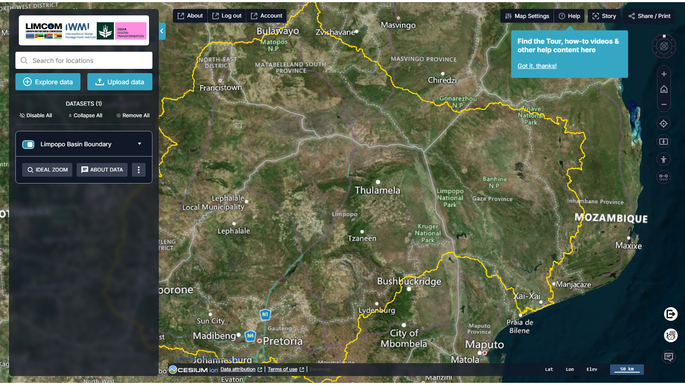

Portal do Gémeo Digital do Limpopo¶
Documentação do portal TerriaJS que apresenta o Gémeo Digital (Digital Twin, DT) da Bacia do Rio Limpopo, desenvolvido para o Instituto Internacional de Gestão da Água (IWMI).
Sobre esta documentação
Esta é a documentação da v2 — descreve o portal atualmente em
funcionamento em
limpopo.digitaltwins.iwmi.org
(TerriaMap 0.4.1 / TerriaJS 8.9.5, compilado a 2026-05-15). As imagens
foram captadas dessa versão. Para o portal original de 2024, selecione
v1 no seletor de versão no cabeçalho.
Abrir o portal
Abra o portal em produção em limpopo.digitaltwins.iwmi.org. Consulte as Notas de Versão para o que mudou desde 2024 — uma interface redesenhada, cinco novas categorias de dados, e novas ferramentas como o assistente de IA e a ferramenta de extração SWAT.
Nomes dos comandos
A interface do portal está em inglês. Ao longo deste guia, os nomes dos botões e painéis são mantidos em inglês — tal como aparecem no ecrã — com a tradução entre parênteses na primeira utilização. Assim, aquilo que lê aqui corresponde exatamente ao que vê no portal.
O que faz o portal¶
O Portal WebGIS (Fase 2) é um portal web geoespacial avançado que permite visualizar e interagir com conjuntos de dados espaciais relevantes para a bacia do Rio Limpopo. Inclui um Gémeo Digital da bacia, agregando e interpolando dados de imagens de satélite, sensores no terreno (in-situ) e resultados de modelos numéricos.
A Fase 2 assenta na base estabelecida na Fase 1, utilizando a framework TerriaJS — uma plataforma de código aberto para exploração de catálogos geoespaciais na web. O portal inspira-se em plataformas como a Digital Earth Africa (DE Africa) e o NationalMap.


Comece por aqui¶
-
É a primeira vez que utiliza o portal?
Abra o mapa, procure uma localização e adicione o seu primeiro conjunto de dados.
-
Procura dados?
Explore o catálogo temático e pré-visualize os dados antes de os adicionar.
-
Tem dados próprios?
Arraste e largue ficheiros locais, ou ligue um serviço web WMS/WFS.
-
Quer a perspetiva técnica?
Arquitetura, fontes de dados, processo de desenvolvimento e implementação.
Principais capacidades¶
| Capacidade | O que lhe oferece |
|---|---|
| Visualização geoespacial | Vistas interativas 2D e 3D dos dados da bacia |
| Catálogo temático de dados | Conjuntos de dados organizados em onze categorias temáticas |
| Análise de séries temporais | Explore a evolução ao longo do tempo com a barra temporal |
| Área de Trabalho (Workbench) | Ative, reestilize, reordene e compare as camadas ativas |
| Os Meus Dados (My Data) | Adicione ficheiros locais ou serviços web sem os carregar para a nuvem |
| Histórias (Stories) | Capture cenas para construir uma narrativa que pode partilhar |
| Partilhar e imprimir | Ligações partilháveis, exportação PNG e vistas para impressão |
| Assistente de IA (Water Copilot) | Faça perguntas sobre a bacia e obtenha respostas guiadas |
| Ferramenta de extração SWAT | Consulte caudais modelados para um canal num intervalo de datas |
Novo na v2
Face à versão de 2024, a v2 acrescenta cinco categorias de catálogo (Flood Monitoring & Early Warning, Drought Monitoring & Risk Assessment, Citizen Science, Water Use Monitoring and Analysis e Data Sources & Providers), duas novas ferramentas (o assistente Water Copilot e a SWAT Extraction Tool), um conjunto de mapas de base alargado e uma área de trabalho redesenhada. O início de sessão passou a ser obrigatório para abrir o portal.
| Assistente com IA | Apoio a questões e navegação no portal |
Conclusão do relatório original¶
O Portal WebGIS representa um avanço significativo na visualização de dados geoespaciais para o IWMI. Construído sobre a robusta framework TerriaJS, integra conjuntos de dados diversos e disponibiliza uma interface intuitiva para explorar a bacia do Rio Limpopo — apoiando a tomada de decisões informadas na gestão dos recursos hídricos em toda a bacia.
Contacto¶
Para obter ajuda com o portal, ou para questões sobre os conjuntos de dados publicados, contacte a equipa geoespacial do IWMI através de iwmigeospatial@gmail.com, ou utilize o formulário de comentários integrado no portal.